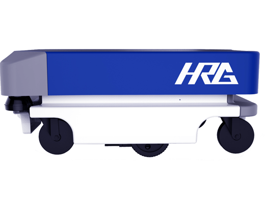
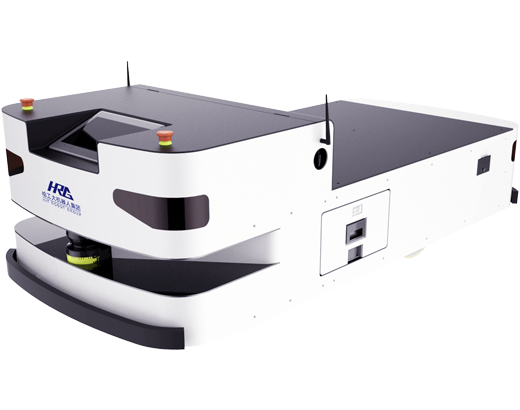
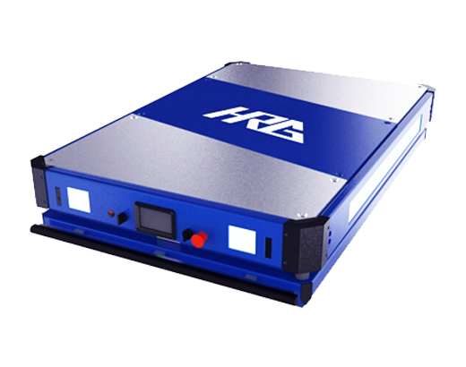
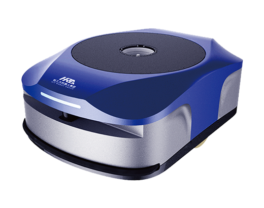
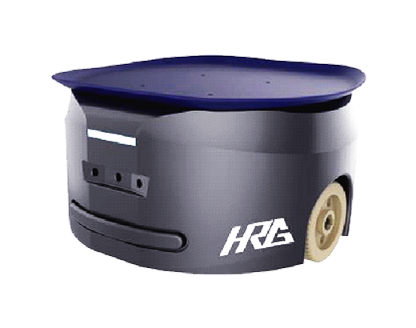
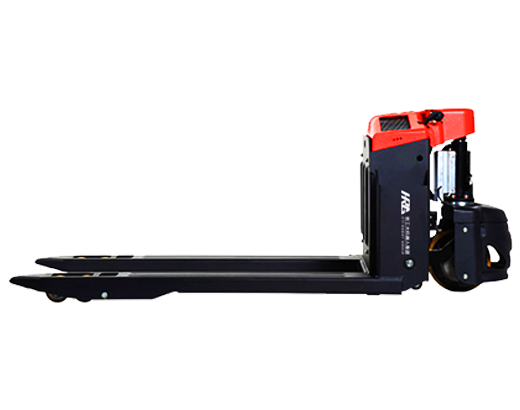
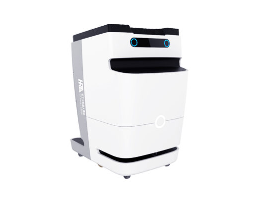

- 中导机器人科技有限公司 ZhongDao Robot Technology Co Ltd
-
目录
企业简介
一:轻载室内激光导航AGV
二:双向激光导航AGV
三:重载激光AGV
四:舵轮全向AGV
五:二维码仓储物流机器人
六:快递分拣机器人
七:全智能搬运车
八:激光SLAM叉车
九:医疗物流机器人
-
企业简介
中导机器人科技有限公司是哈工大机器人集团（HRG）旗下专注于移动机器人技术研发的全资子公司，现拥有员工70余人，研发人员占60余人，其中博士学历3人、硕士学历30余人，多人获得工程师证书及高级工程师技术认证。与哈工大等知名院校建立了长期产研合作关系，已申请相关国家发明专利60余项，科研与创新实力雄厚。
公司拥有包括机器人导航技术、机器人调度技术、机器人视觉技术等在内的核心技术，目前中导产品涵盖激光SLAM导航AGV、激光SLAM导航叉车、惯性导航AGV、磁导航AGV、磁导航叉车、医用物流机器人等产品，致力于为客户提供智慧物流的完整的解决方案。
公司产品主要面向工业，市场推广方向围绕汽车制造、医疗、物流、电子3C等领域。目前，HRG中导已经与医疗、汽车等行业的知名企业建立合作，也期待与您合作！
中导致力于成为一流的移动机器人领军企业。
-
一：轻载室内激光导航AGV
产品概况：
利用激光雷达构建室内地图、实现精准建模和定位。激光雷达具有探测距离远、测量速度快、结果精确度高的特点，机器人可以为所工作的场所建立精准的2D地图，为本身提供高精度的导航方式。同时还可以为机器人提供避障功能，灵活应对多变的环境。
产品优势：
1.基于全球最领先的SLAM（同步定位与建图）技术;
2.利用激光雷达实时获取环境地图信息;
3.实现建图定位、路径规划、避障、人体跟随等功能;
4.达到导航精度厘米级;
5.现场施工简单，不需要增加额外成本;
6.更改路径时只需要重新建地图，不需要增加额外成本。
应用领域：
电子、汽车、化工、医药、物流、冶金、烟草、装配等行业。
基本技术参数：
运动方式：双驱差速
底盘尺寸：680mm*536mm
底盘高度：392mm
运行速度：≤1.0m/s
自重：80±5（KG）
负载：≦300KG
越障能力：跨越间隙30mm
电池容量：24V45AH
电池寿命：充放电≧300次
定位精度：±50mm
激光性能：扫描直线距离30m，角度270°
充电时长：≦4小时
导航方式：激光导航
续航能力：≧8小时
充电方式：自动充电+手动充电
通讯方式：WIFI，Ethernet
扩展接口：UBS2.0*2、HDMI*1、网口*1
报警方式：音响、呼吸灯
避障方式：激光避障+防撞面+单点激光避障

-
二：双向激光导航AGV
产品概况：
该AGV是一款可双向移动的机器人，解决了单向激光扫描角度存在盲区的问题，360°全方位扫描覆盖，有助于定位和避障，同时双向移动的功能使AGV能够满足狭窄环境的运行需求，更加高效、稳定、智能。
产品优势：
1.360°扫描、无盲区，可以实现双向移动，应用场合更灵活;
2.基于全球最领先的SLAM（同步定位与建图）技术;
3.利用激光雷达实时获取环境地图信息;
4.实现建图定位、路径规划、避障等功能;
5.达到导航精度厘米级;
6.现场施工简单，不需要增加额外成本;
7.更改路径时只需要重新建地图，不需要增加额外成本。
应用领域：
电子、汽车、化工、医药、物流、冶金、烟草、装配等行业。
基本技术参数：
运动方式：双驱差速
底盘尺寸：600*900mm
底盘高度：360mm
负载：≦300KG
自重：80±5（KG）
电池容量：48V30AH
运行速度：≤1.2m/s
定位精度：±40mm
二次定位：±10mm
激光性能：距离30M,角度270°,对角各一
充电时长：≦2.5小时
电池寿命：充放电≧300次
续航能力：≧10小时
导航方式：激光导航
报警方式：音响、呼吸灯
充电方式：自动充电+手动充电
避障方式：双向激光避障
通讯方式：WIFI，Ethernet
 -
三：重载激光AGV
产品概况：
重载激光AGV主要用于生产线上的原材料配送及半成品、成品的运输；在工业生产中能代替人做某些单调、频繁和重复的长时间作业或是危险、恶劣环境下的作业；可当作是一个个可移动的装配台、加工台使用，它们既能自由独立地分开作业，又能准确有序地组合衔接，实现形成没有物理隔断，但能起动态调节作用的高度柔性生产线。
产品优势：
1.承重、移载方式均可灵活定制，承重范围 < 2000Kg，移载方式有辊道，链条，链板，顶升，潜伏顶升等;
2.定位方式灵活，定位精度高，灵活采用激光/磁条定位方式，配合机械辅助装置，最高可达毫米级精度;
3.搭配使用集群式调度软件系统，不仅可以大规模作业，而且灵活实现和其他自动化设备的对接。
应用领域：
汽车、家电、电子、化工、医药、冶金、烟草等工业领域。
基本技术参数：
自重：300Kg~400Kg
承载能力：≤2000Kg（可定制）
导引方式：激光导航
驱动系统：双轮差速驱动
行走最大速度：1m/s
坡度：≤2°
定位精度（直线）：±10mm
通信：Wi-Fi无线以太网
过轨间隙：≤10mm
越障能力：跨越间隙10mm
行进方式：前进后退，左右转弯
续航能力：≧10小时
充电方式：自动充电
电池容量：48V50AH
紧急制动：急停开关
避障安全：激光/机械防撞
 -
四：舵轮全向AGV
产品概况：
舵轮AGV的主要功能就是在中央控制系统下自主完成任务分配，车辆调度，路径（线）管理，交通管制，自动充电等功能；车载控制系统在收到上位系统的指令后，负责AGV的导航计算，导引实现，车辆行走等功能，机载设备工况联动。
产品优势：
1.实现小车的前进和后退甚至全方位行驶：前进、后退、侧向和旋转功能;
2.行驶精度高，无需二次定位;
3.定位精度高。
应用领域：
电子、汽车、化工、医药、物流、冶金、烟草、装配等行业。
基本技术参数：
产品尺寸：1000（W）*1500（L）*350(H)
外壳材料：金属
产品重量：150KG
显示屏：5寸
导航方式：磁条导航
载重：1T（可定制）
避障方式：红外避障，激光壁障
制动方式：机械制动 电磁制动
移动方式：双电机舵轮
控制方式：无线遥控（平板）
续航能力：≧10小时
最大移动速度：0.7m/s
急停开关：有
充电方式：自动充电
 -
五：二维码仓储物流机器人系统
产品概况：
颠覆传统电商物流中心作业“人找货、人找货位”的模式，按照作业计划调动机器人，通过“货找人、货位找人”的全新模式，实现物流中心库区无人化，库位在机器人驱动下自动就序。
产品优势：
1.二维码导航系统：通过自定义二维码视觉定位+惯导技术实现机器人高精度定位与移动;
2.多机调度系统:采用动态数学模型分析，将订单任务实时动态分配给每台机器人，机器人根据订单任务，实现最佳任务分解和路径规划。多机调度系统获取并分析机器人的分解任务与规划路径，实现机器人之间的任务协调与路径选取;
3.特殊的顶升结构:能够承载300-500KG的下压力并在行走时保持AGV的整体稳定，AGV旋转时货架不随之旋转，保证安全性。
应用领域：
仓储物流、电子、3C、服装、医药等行业。
基本技术参数：
产品尺寸：1000（W）*1500（L）*350(H)
外壳材料：金属
产品重量：150KG
显示屏：5寸
导航方式：磁条导航
载重：1T（可定制）
避障方式：红外避障，激光壁障
制动方式：机械制动 电磁制动
移动方式：双电机舵轮
控制方式：无线遥控（平板）
续航能力：≧10小时
最大移动速度：0.7m/s
急停开关：有
充电方式：自动充电
 -
六：快递分拣机器人
产品概况：
该产品是基于快递物流用户“高效、快速的包裹分拣需求”而自主研发的智能分拣机器人。分拣机器人基于稳定高效的调度系统，可实现机器人的流量均衡，并以最优路径将包裹运送至指定“格口”进行投递，分拣效率和投递准确性相对于传统人工作业有了大幅的提升。
产品优势：
1.运行高速：最快可在3m/s的速度下流畅并无故障运行;
2.续航：采用铁锂电池，连续安全运行8小时，充电1小时;
3.导航：采用二维码+惯导。高级运动控制算法保证机器人全程路径纠偏;
4.安全：采用先进的点激光技术，实现高精度快速障碍物检测。自研防撞条实现碰撞检测并急停;
5.包裹投递：可实现10kg包裹上下包处理。
应用领域：
快递物流行业。
基本技术参数：
导航方式：相机+二维码
产品尺寸：450*450*267mm
可载包裹尺寸：400*400*400mm
充电时长：≤1小时
续航能力：8小时
承载最大包裹重量：10KG
自重：20KG
通讯方式：无线WIFI
运行速度：≤3m/s
码距：500mm或550（根据通道宽度决定）
惯性导航：陀螺仪、里程计
防撞功能：点激光
充电方式：自动充电
移载方式：翻盖式
定位精度：±10mm
 -
七：全智能搬运车
产品概况：
全智能搬运车主要是以蓄电池作为电源，用磁条导航方式控制其运行路线的自动化智能搬运设备。
产品优势：
1.产品移动灵活，全自主装卸货物，无需人工干预;
2.定位精度高;
3.可以实现工厂的无人化货物转运。
应用领域：
电子、汽车、化工、医药、物流、冶金、烟草、装配等行业。
基本技术参数：
导航方式：采用磁导航传感器
额定载荷：1400KG
驱动电机功率 (60分钟)：2.3kw
驱动控制方式：数字控制系统
行驶速度：0.5-0.7m/s
轮胎尺寸(驱动侧)：Ø230*90mm
行车制动：电磁制动
轮胎尺寸(承重侧)：Ø85*85mm
电池重量(+5%)：243KG
轮距(驱动侧)：530mm
车轮数量(驱动侧/ 承重侧)：2/4
轮距(承重侧)：380mm
蓄电池电压/额定容量 (5小时放电量)：24V/270AH
最大爬坡能力(满/空载)：11.0°
 -
八：激光SLAM叉车
产品概况：
将原有手动的电动叉车加装各类传感器并通过软件算法改造成可以自动行走、自动避障、自动叉货的激光叉车，从而实现叉车的手自一体。同时叉车周边配有安全触边，保证整体的安全性与稳定性。
产品优势：
1.无需磁条，无需标签，无需反光板;
2.无人驾驶，自动作业;
3.提高企业工业自动化程度及竞争力;
4.有效的降低工伤，提高工作效率，很大程度上降低人力成本。
应用领域：
工厂车间、仓库、流通中心、配送中心、港口、车站、机场、货场、等需要托盘货物的装卸、搬运作业的场合。
基本技术参数：
导引方式：激光导引+手自一体
行走功能：前进、后退、转弯
驱动及转向方式：单/双轮驱动兼转向
额定载荷：2T
货叉类型：标准叉，窄叉，宽叉
最大举升高度：12cm
运行速度：0.5-0.8m/s
电池容量：根据叉车自身
执行机构：电动提升或液压提升
制动方式：减速电机，电磁制动
停位精度：±30-50mm
通讯方式：无线局域网
安全系统：前方:非接触式防护+防护栏

-
九：医疗物流机器人
产品概况：
该产品基于先进的激光导航技术，融合多重避障防护，实现医院等场所的药物、耗材自动配送。无需人员跟随，不需外部设备辅助，自主定位，可实现不同楼层之间的配送作业。同时友好的人机界面、人性化的载物设计使得操作简洁、存储药品更安全合理。
产品优势：
1.激光无轨导航;
2.不同楼层穿梭作业、自动进出电梯;
3.存储量大。
应用领域：
医药行业以及需要室内小物料配送的领域。
基本技术参数：
导引方式：激光导航
产品尺寸：（长宽高）1040*865*1370mm
运动方式：双驱差速
运行速度：≤1.2m/s
载重：200KG
电池容量：24V45AH
越障能力：跨越间隙30mm
充电时长：≦2.5小时
充电方式：自动充电+手动充电
续航能力：≧10小时
电池寿命：充放电≧300次
报警方式：音响、呼吸灯
人机界面：10寸触摸屏
通讯方式：WIFI，Ethernet
避障方式：激光避障+单点激光避障
安全防护：急停
容积：三层抽拉式抽屉，存储总容积约300L

- 中导机器人
- 目录
- 企业简介
- 轻载激光AGV
- 双向激光AGV
- 重载激光AGV
- 舵轮全向AGV
- 二维码物流机器人
- 快递分拣机器人
- 全智能搬运车
- 激光SLAM叉车
- 医疗物流机器人